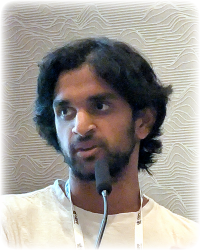

Separating memory descriptors from struct page

The memory descriptors that will replace struct page are, eventually, intended to only occupy eight bytes. For many page types, that descriptor will contain a pointer to a type-specific structure — struct folio for folios, for example. Some other page types can be fully described with the eight bytes available. This descriptor-based future will be cleaner and more memory-efficient, but getting there is not a small task.
A number of descriptor types have been defined so far, Moola said, starting with the folio type. For pages used by the slab allocator, slab descriptors were added in 2021. There is struct ptdesc for page-table pages, and descriptor types for zsmalloc and netmem as well. Each of those descriptor types is currently carefully designed to overlay struct page but, when the switch is made, it will become possible to remove unneeded fields from each, making them smaller.
One concern he has with switching to descriptors is the double-allocation cost. When a page is needed for some purpose, kernel code will need to allocate that page, but it will also have to allocate the descriptor to manage it. With the existing system memory map, instead, the page structures are set up at boot time and are always present. He also wondered about how the change would be managed in general; he suggested adding a new configuration option (CONFIG_MEMDESC) that would provide access to all of the disruptive changes. It would be disabled by default. A participant said that folios will be the biggest user of descriptors in general; he asked whether it might make sense to convert all of the other types first as a relatively small change before making the big leap.
Matthew Wilcox said, though, that moving to the eight-byte descriptor is
still a distant goal. There is "a long-tail problem
" of code
throughout the kernel using random fields in struct page for its
own purposes. This code has worked so far, but all of it will have to be
located and fixed before the change can be made. That said, he liked the
idea of doing folios last. He suggested the creation of a "developer
preview" configuration that would simply "disable ¾ of the kernel
";
it would support the XFS filesystem but no networking. This configuration
could be used initially to test out changes and run benchmarks. Converting
page-table descriptors first, he said, might be a good start.
Moola said that he has tried moving to descriptors for a few types; it allowed him to shrink struct page to 32 bytes. One of the biggest challenges turns out to be page migration, which forces some fields to be kept in struct page, and also requires the allocation of a new descriptor during the operation. There was a detailed description of how migration uses struct page fields, and a conclusion that, initially, enabling descriptors would force migration to be disabled.
Moola's
slides contain a number of examples of what descriptors might look like
once they are separated from struct page; most of those details
were not discussed in the session in any detail, though. The session
concluded with a statement that this work appears to be making progress.
| Index entries for this article | |
|---|---|
| Kernel | Memory management/Memory descriptors |
| Conference | Storage, Filesystem, Memory-Management and BPF Summit/2026 |